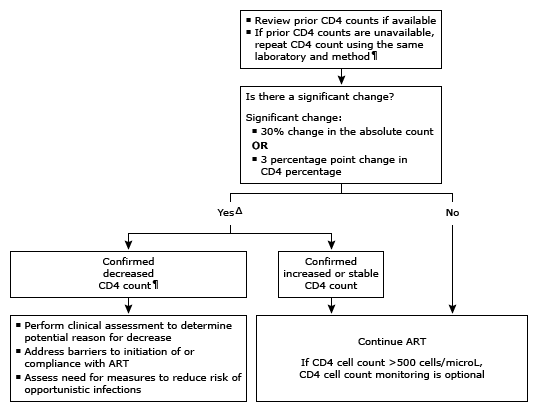

Evaluation of low CD4 count in adults with HIV infection*

This algorithm is intended for use with additional UpToDate content on HIV and related topics.
ART: antiretroviral therapy; WBC: white blood cell. * The normal CD4 cell count for most laboratories falls in a range of 800 to 1050 cells/microL. Sequential samples that are processed using different methods or by different laboratories should be interpreted with caution. Interpretation of a specific abnormal result should be based on the reference range reported with that result. ¶ In general, CD4 counts are not used to guide initiation of ART since ART should be offered to all HIV-infected patients, including asymptomatic individuals, regardless of their CD4 count. Initiation of ART is more urgent the lower the CD4 count. If CD4 count <200 cells/microL or declining, refer to clinician with expertise in the management of patients with HIV. Δ In general, the absolute CD4 count and CD4 percentage are concordant. If the absolute CD4 count is discordant with the CD4 percentage, assess factors that may alter total WBC count (eg, infection, medications). Significant changes in the total WBC count will have an effect on the CD4 cell count but not on the CD4 percentage. CD4 count should be repeated after resolution of ongoing infection and/or change in medication.